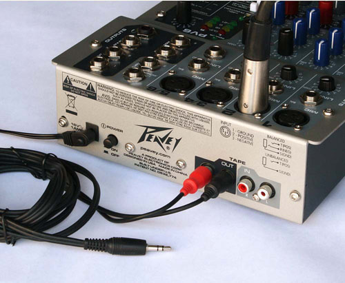

Tutorial - Connecting a Mixer
From Audacity Development Manual
To connect a mixer to the line input port on your computer you will need a dual-RCA to mini-plug (1/8 inch) cable. Plug the RCA plugs into the RCA output jacks on the back of the mixer. Plug the stereo mini-plug into the line input port on your computer.
- 
If you do not have a line input port (many Windows laptops do not), you'll need a line level USB audio interface. In that case you will need a cable that connects from the output of the mixer to the input of the USB interface. In the illustration below a dual-RCA cable is connected from the output of the mixer (out of frame) to a USB interface. The USB interface then plugs into the USB port on the laptop.